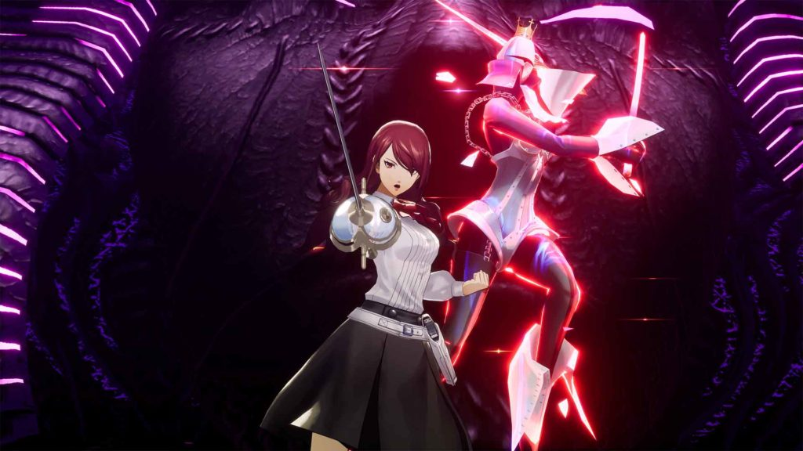
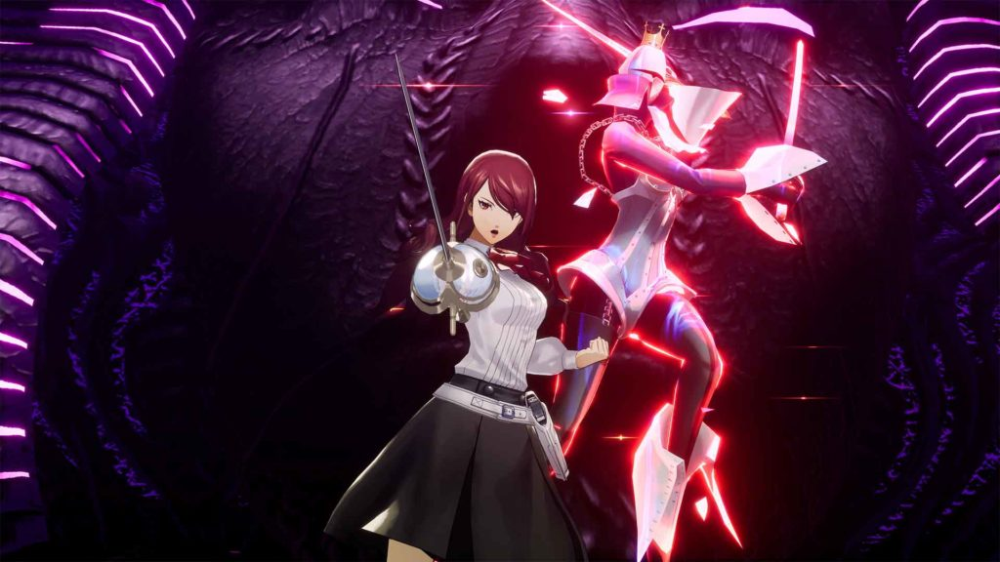

La filosofía en Persona 3
¿Qué es el arquetipo Persona?
La persona (en latín, "máscara" del actor) representaría el arquetipo de la máscara dentro de la conceptualización de la psicología analítica de Carl Gustav Jung.
Los arquetipos descritos por Jung representan patrones de comportamiento, una especie de imágenes universales que forman parte de lo que llamó el inconsciente colectivo. Para este estudioso de la mente humana, la psique estaba compuesta por: el ego que representa la mente consciente, el inconsciente personal, que contiene recuerdos, y el inconsciente colectivo, una parte de la mente que contiene las experiencias y el conocimiento compartido por la especie humana.
La forma en la que nos presentamos y adaptarnos al mundo que nos rodea. Las diferentes máscaras que utilizamos en sociedad para proteger el ego y contener impulsos y emociones primitivos que no son socialmente aceptables. Si la identificación con este arquetipo es excesiva, se puede llegar a perder de vista la esencia del ‘yo verdadero’.
¿Qué es Persona 3?
Antes de discutir las ideas de Persona 3 , es importante establecer su escenario. Si bien la visión del juego de principios del siglo XXI no estaba lejos de la realidad, el espectro de la muerte se cierne pesadamente sobre él. Su secuencia de apertura les dice explícitamente a los jugadores que recuerden que, algún día, morirán. Esto adquiere un nuevo significado con la revelación de que el mundo está en peligro por el horror cósmico Nyx, que descenderá sobre la Tierra y exterminará a la humanidad en un evento apocalíptico llamado "la Caída".
El mundo de Persona 3 está absolutamente saturado de muerte. Nyx no solo es una amenaza perpetua, sino que la mayoría de los personajes del juego luchan contra la pérdida. Incluso los medios por los que convocan a los espíritus de las Personas titulares tienen imágenes mortales. En lugar de simplemente invocarlos como en otros juegos, los personajes se disparan en la cabeza con lo que en realidad es una pistola mágica. Esto proporciona un recordatorio constante de que la muerte siempre es posible, lo que se relaciona con su inevitabilidad. Esta estética morbosa conduce a la pregunta narrativa más importante de Persona 3 : ¿cómo se puede encontrar significado a la vida estando rodeado de tanta muerte?
Para responder a eso, el juego parece invocar al caballero de la fe y al caballero de la resignación infinita del filósofo cristiano Søren Kierkegaard. Ambos tienen sueños, amores e ideales que buscan perseguir, pero el caballero de la infinita resignación pierde la esperanza de que puedan realizarse. No les consuela saber que, sin importar lo que hagan, sus esfuerzos están condenados al fracaso. Por el contrario, el caballero de la fe acepta lo absurdo de perseguir estos objetivos pero lo hace de todos modos, confiando en la noción de que todo es posible para Dios.
La trama de Persona 3
Persona 3 no es una historia explícitamente cristiana, pero su narrativa está claramente inspirada en la religión. El protagonista del juego es una alegoría vaga de Jesús, un héroe semidivino que, paradójicamente, se sacrifica para derrotar a la muerte. Para subrayar aún más este punto, su Persona definitiva se llama literalmente "Mesías". Este simbolismo religioso permite al héroe servir como un dios en quien sus amigos han puesto su fe. Como resultado de estas conexiones, puede manifestar los Arcanos del Universo al final del juego, haciendo posible lo imposible al permitirle sellar a Nyx.
Si el héroe es Dios y sus amigos los caballeros de la fe, entonces el caballero de la resignación infinita sería Ryoji, una manifestación humana del poder de Nyx. Aunque inicialmente estaba lleno de vida y celo, Ryoji luego recuerda su propósito como destructor de la humanidad. Al no ver salida a este espantoso destino, simplemente se resigna.
En lo que podría considerarse la escena de la "última tentación" del protagonista, Ryoji ofrece al héroe la oportunidad de vivir en feliz ignorancia hasta que la Caída aniquile a la humanidad; ahorrándoles la ansiedad de tener que enfrentarse inevitablemente a la muerte. Sin embargo, en el final bueno del juego, el héroe se niega, recompensando la fe que sus seguidores depositaron en él al decidir derrotar a Nyx junto a ellos, sin importar cuán absurda pueda ser la tarea.
Curiosamente, Persona 3 también alude a otro filósofo existencialista. A medida que se acerca el otoño, las personas contraen cada vez más el síndrome de apatía, una condición en la que las víctimas pierden efectivamente las ganas de vivir. Una excepción notable es el personaje Takaya, cuyo cuerpo defectuoso parece darle una razón perfecta para renunciar a la vida. En cambio, reconoce que la Caída efectivamente niega su miedo a que le sobrevivan y, por lo tanto, pasa los días que le quedan viviendo al máximo. En este sentido, Takaya podría describirse como una interpretación particularmente oscura del ubermensch de Friedrich Nietzsche.
Mientras que un caballero de la fe pone su confianza en Dios, un súper hombre lo rechaza. A pesar de escribir la infame cita "Dios ha muerto", Nietzsche la expresó más como un grito de desesperación que de triunfo. En su Parábola del loco, describe la pereza apática de los ateos que ignoran a Dios en lugar de entrar en pánico al darse cuenta de que, sin Él, la cultura y la moralidad inspiradas por las enseñanzas cristianas no pueden justificarse. A los ojos de Nietzsche, la única manera en que la humanidad podía limpiarse la sangre de sus manos era tomar el lugar de Dios, creando nuevos valores para guiarse a través del vacío.
Convertirse en un súper hombre es exactamente lo que Takaya intenta y no logra hacer. Aunque tiene razón al ver la Caída como un gran igualador, sus intentos de abandonar los valores existentes de la humanidad son simbólicamente derrotados cuando el protagonista previene la Caída. Esto afirma que la humanidad que Takaya abandonó (y que Ryoji abandonó) es intrínsecamente lo suficientemente poderosa como para trascender la muerte misma.
Esto se vuelve literal cuando los amigos del héroe deciden vivir lo mejor que puedan para honrar su sacrificio. El mundo puede ser fugaz y impermanente pero, independientemente de ello, sus conexiones siguen siendo lo suficientemente importantes como para definir el resto de sus vidas.
A pesar de toda su muerte y desesperación, Persona 3 es un rechazo integral de la apatía y el nihilismo. Su historia es, en última instancia, una afirmación de que, por muy cliché que parezca, las amistades son las que dan sentido a la vida. Al hacer que su héroe se gane el Universo abrazando su humanidad, en lugar de abandonarlo o trascenderlo como intentaron sus rivales, su viaje demuestra que los vínculos que uno forja son lo suficientemente importantes como para que valga la pena morir por ellos, pero, más importante aún, que valen la pena vivir por ellos...
Simbolismo de los Personas
Cada personaje jugable del juego tiene su propio Persona e incluso tienen cierta relación entre ellos, ya que tienen algunas cosas en común. Algunos de ellos son:

Thanatos: Thanatos es la personalidad final del protagonista principal. Este demonio se vincula con los temas de la muerte en el juego, así como con el pasado y el futuro del protagonista principal. El protagonista principal pierde a sus padres a una edad temprana y muere para salvar al mundo al final de la narración.
Noticias
¡Persona 3 Reload se estrenará el 2 de febrero del 2024!
 



Nuevas imagenes de Persona 3 Reload.